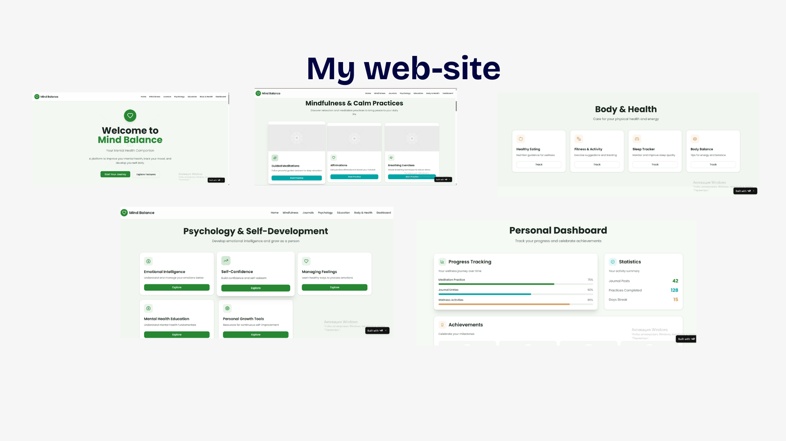
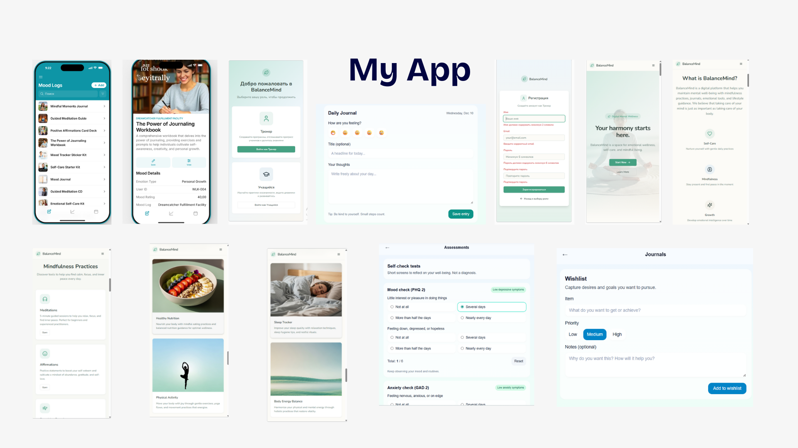

Brief Introduction: I am a student passionate about technology and mental health, developing web and mobile solutions to help people improve emotional well-being.
City Selected for the Website
The website focuses on Riga, Latvia, highlighting local mental health resources and support options.
Website Details
Screenshots of All Pages: Available on the presentation link above.
Brief Information for Each Page:
Home: Introduction to BalanceMind and main navigation.
About Project: Purpose and goals of the platform.
Journals: Daily, gratitude, goals & dreams journals for users.
Tests & Tasks: Psychological tests and exercises.
Trackers: Mood and sleep tracking modules.
Modules and Functions
Journals for daily reflections, gratitude, goals, and dreams.
Goal setting and tracking (daily and weekly).
Psychological tests and personalized AI recommendations.
Mood and sleep tracking functionality.
Mobile app integration for on-the-go usage.
Technologies Used
Website Hosting & Development: Vercel
Mobile App Builders: GlideApps, Replit, Open Builder
Programming Languages & Frameworks: HTML, CSS, JavaScript, React
AI Tools: for analysis, recommendations, and app functionalities
Data Storage: Local storage for user data
About the Project
BalanceMind is a platform designed to support mental health and emotional well-being.
Problem Statement
Modern people experience high levels of stress, anxiety, and emotional overload.
There is often limited access to convenient tools for self-help, mood tracking, mental development, and learning discipline.
Project Goal
Create a mobile application to help users track emotional states and improve mental health, brain development, and discipline.
Objectives & Expected Outcomes
Maintain different journals: daily journal, gratitude journal, goals and dreams journal.
Set and track daily and weekly goals.
Complete psychological tests and diagnostics.
Receive personalized AI-based recommendations.
Deliverables
Mobile application with an intuitive interface.
Journals and mood tracking features.
Personalized advice and tasks for improving emotional well-being.
Target Users
Teenagers and adults aiming to improve mental health.
People who want to self-analyze and track their emotional state.
Impact on Society
Increase awareness of mental health.
Reduce stress and anxiety levels among users.
Develop emotional resilience and improve quality of life.
Website Preview

Screenshot of the BalanceMind website main page.
App Preview

Screenshot of the BalanceMind mobile application interface.